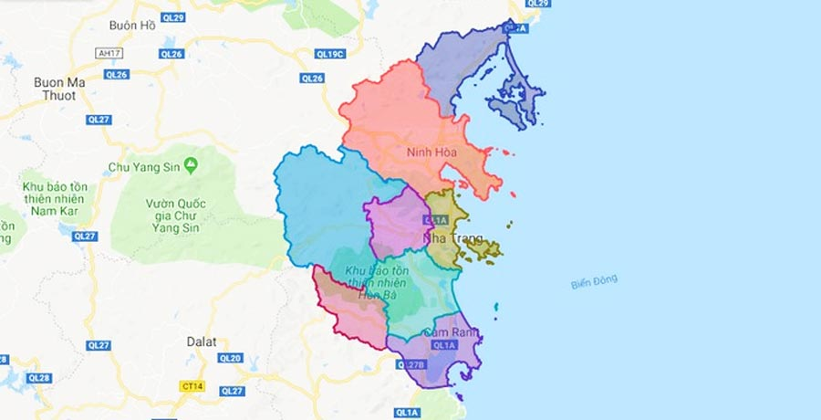

Khánh Hòa là một tỉnh duyên hải Nam Trung Bộ, Việt Nam, sở hữu bờ biển dài hơn 385 km cùng hàng trăm đảo lớn nhỏ. Nơi đây được thiên nhiên ưu đãi với khí hậu ôn hòa, nắng ấm quanh năm.
Nha Trang – Khánh Hòa
Nơi tri thức tỏa sáng và đam mê cất cánh
Trường THPT Lý Tự Trọng không chỉ là nơi giảng dạy kiến thức, mà còn là mái trường thân yêu ghi dấu biết bao kỷ niệm của tuổi học trò. Trải qua nhiều năm xây dựng, nhà trường từng bước khẳng định vị thế vững chắc trong nền giáo dục tỉnh Khánh Hòa.
Chất lượng giáo dục chính là thước đo giá trị bền vững. Tỉ lệ tốt nghiệp THPT luôn ở mức cao, nhiều học sinh đạt giải trong các kỳ thi học sinh giỏi cấp tỉnh, cấp quốc gia và trúng tuyển vào các trường đại học danh tiếng.
Ngoài ra trường còn nổi bật nhờ các câu lạc bộ hoạt động đầy nhiệt huyết, gặt hái nhiều thành công trong công tác Đoàn. Tiêu biểu là:
Những người kiến tạo phía sau hậu trường: Đúng như cái tên "Ngôi Sao Xanh", mỗi thành viên là một đốm sáng hy vọng, âm thầm chuẩn bị từng hàng ghế, hệ thống âm thanh, ánh sáng để các buổi lễ diễn ra hoàn hảo nhất. Hậu cần với họ không chỉ là công việc chân tay, mà là nghệ thuật của sự chu đáo.
Sức trẻ và nhiệt huyết: Nơi hội tụ những trái tim không ngại khó, ngại khổ. Dù áp lực thời gian đè nặng, tiếng cười vẫn luôn giòn giã. Sự gắn kết như một gia đình giúp các bạn biến những kế hoạch trên giấy thành sự kiện rực rỡ.
Chẳng ngại nắng, chẳng sợ deadline: Từ hội thao đến lễ kỷ niệm, thành viên LYSM luôn lăn xả khắp mọi ngóc ngách để bắt trọn những khoảnh khắc đẹp nhất. Truyền thông với LYSM là sự nhiệt huyết lưu giữ ký ức.
Năng động & Sáng tạo: Không chỉ chụp ảnh, quay phim, các bạn còn là những content creator tài năng. LYSM là môi trường chuyên nghiệp nhưng cũng cực kỳ "lầy lội" đúng chất học trò.
Không chỉ dừng lại ở các CLB sở thích, học sinh trường THPT Lý Tự Trọng còn tích cực tham gia các phong trào lớn như Hội Thao Quốc Phòng - An Ninh rèn luyện sức khỏe, hay ngày hội "Chủ Nhật Xanh" chung tay bảo vệ môi trường xanh - sạch - đẹp.
Những giải thưởng và sự tin yêu của thầy cô, bạn bè chính là minh chứng rõ nhất cho tài năng và sức trẻ của học sinh trường LTT.